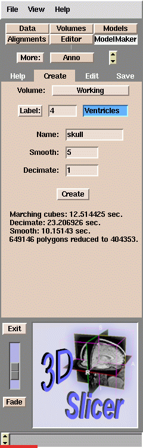
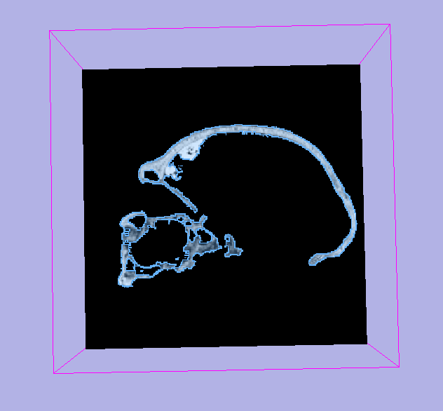
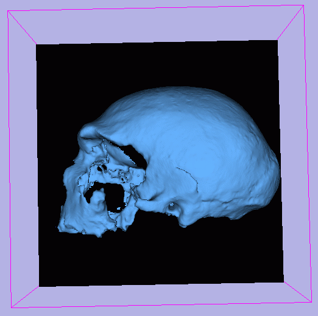

One of the most important uses of Slicer is to create three dimensional reconstructions
of anatomical structures, using two dimensional slices as input.
This type of reconstruction is called a 3D model.
The input to this process is label map data that has been
created with Slicer's editing tools.
To create a 3D model:
- From the Main menu, click ModelMaker. The ModelMaker panel appears.
- Click the Create tab. The Create panel appears.

- Select the Volume.
- Click Label and select a color, or enter a Label color number.
This is the value that will be used to create the model.
This should correspond to the value in the label map.
- Enter a Name for this model.
- Enter a Smooth value, which controls how smooth the resulting model will be.
- Enter a Decimate value, which indicates how redundant polygons will be reduced.
- Click Create to start the model creation process.
Here is an example.
Below is a skull image segmented using the Threshold effect.
All voxels labeled 4 (blue) will be included in the resulting model.

Below is the resulting 3D skull model.
